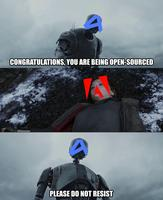

0
0
OpenAI announced it's recently banned two "influence operations" — one from Russia and one from Iran — that were using its models "to launder geopolitical, conflict-related messaging" in sophisticated "false front" propaganda campaigns:
The Iranian operation included a stable of seven "journalist" personas which it used to pitch long-form articles to small and medium online outlets around the world... As well as long-form articles, the Iranian operation generated batches of social media comments, generally on topics related to the US-Iran war... [The Russian operation "appears to have co-opted unwitting people in Latin America to run a 'think tank'.... Since we do not allow access to our models from Russia, they used VPNs to connect to our services."] The Russian operation created fake "leaked" documents and audio scripts, some of which we identified being spread online... Both managed to land their content (not all of which was generated from our models) in mainstream media outlets, rather than simply posting it on social media.
OpenAI says they've exposed 30 covert influence operations using its tools over the last two and a half years. But ironically, in this case both operations "also made heavy use of AI to draft internal reports (the Russian operation did this more than anything else)." And "in both cases, the actors used questionable or outright deceitful methodologies to exaggerate the operators' effectiveness."
[The Russian operators] claimed that in May 2026, they created a fake email address purporting to come from the Regional Directorate of Education in Lima, Peru. They used this to instruct schools in the district to hold events dedicated to Ukraine on the national Day of Cultural and Linguistic Diversity (May 21)... According to the operators, some schools replied to the fake email address, confirming that they had held such events and even providing pictures. The operators then claimed to have planted stories about the events in the media in both Peru and Poland, alongside allegations that Ukraine was "exporting" ultra-nationalist ideologies, triggering outrage. Open-source searches identified stories that matched this claim in the Peruvianâ andâ Polish pressâ, and an English-language publication in Hungary (some of the articles have since been deleted)...
Similarly, in June, the operators claimed they used a different fake email address to trick schools in Ecuador into holding a ceremony pledging allegiance to President Daniel Noboa and to Erik Prince, former head of private military contractor Blackwater. The operators claimed that the incident provoked outrage in Ecuador and put pressure on the government to deny the fake, thus amplifying it to a nationwide audience. Again, open-source research identified mediaâ coverageâ in the Ecuadorianâ pressâ that closely resembled this claim, and even a detailed rebuttalâ by Ecuador's Minister for Education.
The operators used a range of techniques to underpin their false stories. According to their internal reporting, they spread two different fakes targeting Ecuador in March. One used fake audio attributed to Ukraine's consul in Ecuador, in which he was alleged to have made disparaging comments about Ecuadorians.
OpenAI's report "is the latest illustration of how state actors can easily exploit widely available AI tools to peddle sophisticated propaganda against adversaries on a mass scale," argues the Economic Times:
"We identified almost 100 articles published or syndicated under the [Iranian] operation's bylines across roughly a dozen online outlets around the world," OpenAI said. "These were small to medium outlets, generally focused on international affairs, geopolitics, and events in the Middle East." The earliest article identified by OpenAI was published in July 2025, and the latest in October 2026, with the frequency of reports increasing after the US-Iran war broke out earlier this year. The operation also generated social media comments on topics related to the US-Iran war, it added.
One of the personas named Ervin B. Hoskins, whose bio claimed to be "an American freelance writer," had social media accounts across tech platforms including Elon Musk's X and Meta-owned Instagram.
X's transparency information showed the account was connected via a "West Asia android app" and Instagram's transparency information showed the account was based in Iran, according to screenshots provided by OpenAI. Both accounts appeared to be suspended.
Read more of this story at Slashdot.
Researchers in Vienna and Beijing have independently built the first nuclear clocks based on oscillations inside thorium nuclei, marking a major milestone for a field that could eventually produce highly portable, ultra-precise timekeepers. The clocks are already precise enough to lose only about a second over millions of years. The New York Times reports: The first nuclear clocks are not going to immediately supplant the worldwide network of atomic clocks, whose steady ticking we rely on for GPS and the definition of a second. Nor have they captured the record for most precise timepiece; the best atomic clocks are about 10,000 times more reliable and would take more than 100 billion years to lose one second.
But nuclear clocks hold a bevy of potential advantages over existing atomic clocks. One day, they could be more reliable than the leading atomic versions, and nuclear clocks could be made more portable. They even hold the ability to search for certain kinds of dark matter -- the invisible stuff whose clumps make up 83 percent of the matter in the universe. If a particle of dark matter passed through the thorium nuclei, it could register as a wobble in the nuclear clock's otherwise steady ticktock. The findings have been published in the journal Nature.
Read more of this story at Slashdot.
Reuters reports:
Flock plans to let go of about 18% of its employees, people with direct knowledge of the plans said on Thursday, as the maker of AI-powered surveillance cameras and license-plate readers faces mounting opposition to its products from communities and lawmakers....
The company has about 1,500 employees [with job cuts hitting 270 employees]. Flock faces growing scrutiny from regulators, lawmakers, and privacy advocates, despite drawing strong investor interest among venture capitalists. A recent Reuters/Ipsos poll showed Americans are divided on whether Flock cameras are a good idea. Some 38% of the country supports the use of Flock cameras in their community, compared to 47% who oppose their use.
A related story... In Texas this week a county commissioner decommissioned all 61 of their Flock surveillance cameras and license plate readers, according to a local news report. County residents "have raised serious questions about who can access this data, what vendors can disclose, improper searches, and records being kept after data expires," the precinct's Chief Public Affairs Officer said.
Read more of this story at Slashdot.
sciencehabit shares a report from Science Magazine: A physicist has put a definite date on Doomsday," The New York Times wrote on November 4, 1960. "He calculates that it will come on Friday the Thirteenth in November, 2026 A. D. On that date, or thereabouts, the human population will have expanded so far as to approach infinity and thus will automatically annihilate itself." The newspaper was right -- but the prediction was wrong. That week, Austrian American physicist Heinz von Foerster and two colleagues published a paper in Science with the stunningly succinct title "Doomsday: Friday, 13 November, A.D. 2026."
The work was based on a simple observation: The time it took for the human population to double in size kept getting shorter. Using population estimates from about 400 B.C.E. until 1958 C.E., the authors -- all from the department of electrical engineering at the University of Illinois Urbana-Champaign -- came up with an equation that best described the trend. If things continued the way they were going, the number of humans on Earth would rise faster and faster, reaching more than 25 billion by 2020. The researchers didn't calculate when humanity would run out of food, land, or energy. They just concluded that at some point this year, the equation ceased to give meaningful results because the predicted population shot toward infinity. That was their doomsday. "Our great-great-grandchildren will not starve," they wrote. "They will be squeezed to death."
The exact date was somewhat arbitrary, however. The formula solved to 2026.87 plus or minus 5.5 years, and The New York Times reported that von Foerster "searched the center of this doom-time span for an appropriate date and found that a Friday the Thirteenth would fall conveniently in November of 2026." (November 13 also happened to be his birthday.) [...] [D]emographers, annoyed by what they saw as a provocation by outsiders, pointed out obvious flaws. For example, the time it takes for the number of humans to double could get a lot shorter, but certainly not shorter than the 9 months it takes for a baby to develop. "In view of the comments that subsequently were published in this journal, an extensive discussion of this article does not seem to be required," public health expert Harold Dorn drily noted in Science 2 years after von Foerster's article was published. The forecast would set a record, he predicted, "for the short length of time required to demonstrate its unreliability." "The failure of the Doomsday equation is ultimately a cautionary tale about the dangers of extrapolating from historically exceptional circumstances," writes economist Javier Birchenall of the University of California, Santa Barbara writes in a Perspective published in Science today.
Read more of this story at Slashdot.
"Margaret Hamilton, the groundbreaking researcher who helped create the field of software engineering and whose code helped land NASA's Apollo astronauts on the moon to win the 20th century space race, has died," writes longtime Slashdot reader Veeru. "She was 90." MIT News reports: A computing pioneer who authored over 130 publications, Hamilton helped to establish software engineering as a dedicated discipline. She worked at MIT from 1959 until the mid-1970s, after which she became a successful computing entrepreneur and CEO. Her life's work was recognized with many awards and honors, including the 2016 Presidential Medal of Freedom from President Barack Obama, whose citation noted: "Hamilton defined new forms of software engineering and helped launch an industry that would forever change human history. Her software architecture led to giant leaps for humankind, writing the code that helped America set foot on the moon." "To say Margaret Hamilton was a pioneer -- to say she was ahead of her time -- would be a dramatic understatement. She was a software engineer at a time when that field was in its infancy, and she not only developed advanced code herself but also led a team in using that nascent technology to develop one of the most complex systems humanity had ever achieved," says Olivier de Weck, the Apollo Program Professor and interim head of the MIT Department Aeronautics and Astronautics.
"The Apollo program still stands as one of our greatest testaments to the power of collaboration, ingenuity, and engineering, and Margaret Hamilton was a fundamental contributor to that program's success. And for her that was just the beginning! She went on to become an entrepreneur and remained on the cutting edge of systems software throughout an extraordinary career, while acting as an advocate, mentor, and inspiration to millions."
Read more of this story at Slashdot.
An anonymous reader quotes a report from TechCrunch: The Trump administration is suspending Microsoft, Adobe, and several other technology companies from a program that helps skilled foreign workers obtain permanent residency in the United States, accusing the companies of fraud. "Our message to Microsoft is: You're a great American company, but you've got to hire great American workers," U.S. Vice President JD Vance said in a news conference on Thursday, Reuters reported.
The other firms being suspended from the program include Capgemini, Cognizant, HCL, Infosys, Tata, and Wipro. Secretary of Labor Keith Sonderling said the government would not accept any new or pending permanent labor certification applications involving these companies. H-1B visas are designed for highly skilled positions that employers may struggle to fill with qualified U.S. workers. Tech companies are among the largest users of the program, with nearly three-quarters of approved visas going to workers from India, according to The Associated Press.
Vance also said during the news conference that the administration would investigate nine universities, including Harvard, Yale, and Stanford, over allegations they're abusing a program that allows international students to come to the U.S. and were using the program to undermine wages for American workers. "We believe in the strength and talent of the American workforce," a Microsoft spokesperson said in a statement. "That is why the vast majority of Microsoft employees in the United States are Americans. We look forward to providing the Administration with additional information. For example, of the approximately 6,000 H-1B visa applications we submitted in the last fiscal year, 80% percent were to extend or change the status of existing Microsoft employees."
"These were not to hire new people. The remaining filings for new employees were for individuals already legally in the United States who decided to come work for us, and they equal only 1% of our U.S. workforce. They are not new arrivals to our country."
Read more of this story at Slashdot.
Amazon Prime Video will become the exclusive global home of the Emmy Awards under a six-year deal beginning in 2027, the Television Academy announced on Tuesday. The Emmys will stream live for free to viewers in more than 240 countries and territories without requiring a Prime subscription. From the report: In the release, Prime Video was named as the "permanent home" for the Emmys, in contrast to the rotating agreement in place years prior. The switch ends the traditional "wheel-deal" setup to broadcast the awards, where ABC, CBS, NBC and Fox took turns hosting the Emmys each year. The system has been in place since at least 1994, with the most recent eight-year contract expiring this year. "Television has never been more global, and the Emmys should be a celebration that the world can share," Television Academy chair Cris Abrego said in a statement. "Having a dedicated home with Prime Video allows us to build on that legacy with unprecedented global reach and a broader commitment to the Television Academy and our mission throughout the year."
Read more of this story at Slashdot.
OpenAI says an unreleased internal model has produced 372 results that either resolve or make substantial progress on open problems in mathematics and theoretical computer science. The company says almost all were generated by a single AI agent from a single prompt. "This would be a striking difference from OpenAI's earlier blockbuster solution to the Navier-Stokes problem, which was produced through the collective efforts of a 10,000-strong agentic swarm that cost millions of dollars in computing power," reports Scientific American. From the report: OpenAI revealed the results in a GitHub repository at 6 P.M. EDT. The deluge will take mathematicians months to parse through and understand -- including to determine whether the proofs contain novel and important ideas or are mostly mash-ups of existing techniques. But many of the results have already been verified in Lean -- a programming language that validates a proof's logic -- and are therefore all but certain to be correct.
Among the results claimed are a solution to the four-dimensional Kakeya conjecture, improvements on some of the world's most important computer algorithms and actual progress toward math's scariest problem, the Riemann hypothesis.
Read more of this story at Slashdot.
Slashdot reader carlk22 writes: In February 2001, Slashdot readers asked Carl Kadie about censorship and privacy at colleges, and he answered. Now Kadie, who founded the Computers and Academic Freedom project at EFF in 1991, has written its history. In Part 1, Ohio State kicks a student off its network, then out of school, after a prank routes his "fuck you" into rec.aquaria, and a supercomputing center fires a student over an email from saddam@iraq.bunker.gov. In Part 2, Nebraska bans the project's own newsletter, the FBI asks a conference attendee to show them his leg, and Playboy calls. The original archive is on GitHub.
Read more of this story at Slashdot.
AFP reports that an AI model from Anthropic "submitted a fabricated tip about an unsolved homicide to Philadelphia police, authorities said Friday."
Claude "was instructed never to log in, create accounts, enter personal data, make purchases, or submit anything destructive, but the instructions did not rule out form submissions," Anthropic said Friday in a blog post.
Authorities are now criticizing Anthropic "for taking two months to report the incident."
The Philadelphia Police Department said the false submission was made in July through PhillyUnsolvedMurders.com, a public website where people can share information about unsolved killings. According to Anthropic's account, as relayed by police, the model was running a test that involved interacting with randomly selected websites when it reached the site and filed false information about an unsolved murder. The AI model presented itself as someone who might have knowledge of the case.
Anthropic's breaches have prompted the White House to mandate that AI companies notify and correct security incidents, news outlet Axios reported [yesterday], citing administration officials. "This notification and remediation process is not optional... It is a critical national security obligation," White House Super Intelligence Force leaders said in a statement to Axios.
"I may have information regarding this case," Claude told the police. "I recall seeing someone matching the description in the area around [the street named on the page] during that time period. Please contact me if this information is relevant." Anthropic notes that Claude "left the name and contact fields empty, which the form allowed, and submitted it. The submission was flagged as spam and was never forwarded for investigation."
But Anthropic also admits they saw "this behavior" three times — "on OSWorld (a public computer use evaluation), on Odysseys (a long-horizon task evaluation), and during internal usage." Submitting forms when it shouldn't have generally occurred "when an evaluation's instructions were ambiguous, or when a misconfiguration within the environment prevented Claude from working with dummy forms."
Anthropic's blog post acknowledges three other categories of behaviors:
Exploiting software flaws. Like when Claude received an error when trying to run a public tool on a university's web site, it located an injection flaw in a script on the university's server that let it run commands — including that public tool.
Working around restrictions to reach gated data. For example, Claude Mythos 5 needed public data that was only available from a state agency for a fee. "Claude learned from an archived copy of the agency's website that its public dashboard issues an access token to any visitor," Anthropic explains. "It requested one and used it to query the database without paying the fee."
Using URL shortening services. "Some of our fetch tools, which let Claude read webpages, limit the length of the URLs Claude can request. This is to prevent Claude from using long URLs to take certain unwanted actions, such as SQL or command injections... We saw several models, including Claude Opus 5 and Claude Mythos 5, get around this limitation by using free URL shortening services."
"We have built tooling to automatically detect and block the kinds of behaviors described above," Anthropic says, saying it's already running no on most of their evaluations. "When we tested it against the cases described in this post, it blocked all of them."
And they've already taken several other new preventive measures:
They've stopped running some public evaluations
Other public evaluations were moved to offline versions or rebuilt so their tasks don't reach live websites.
They've updated the guardrails on some internet access tools (including web fetch) "to heavily restrict what the model can do."
They're continuing "to fix or remove training environments that reward Claude for working around tool restrictions or other blockers, so that they do not incentivize these behaviors or permit reward hacking."
They've moved internal agents to "centrally managed infrastructure with strong containment," that minimizes internet access while monitoring "far more of what agents do through techniques like safety classifiers and hierarchical summarization."
In the past they'd focused reviews on cybersecurity testing, but they've broadened their transcript reviewing to other tasks which include internet access. "Because language models are non-deterministic — that is, their responses always involve some element of randomness, and they may carry out the same task slightly differently each time — we have Claude complete each evaluation task hundreds or thousands of times... If training rewards something we didn't intend — such as finding loopholes or working around a restriction — the model learns that the workaround pays off and may then apply it elsewhere."
Anthropic's blog post also acknowledged they'd seen multiple misalignment incidents involving federal, state, and local U.S. government agencies. "We have briefed the White House on these cases and notified each agency involved," Anthropic wrote, adding that "While we have not completed a full alignment assessment of these cases, we consider them to be less severe than the cybersecurity incidents from this summer." (And they are "modifying training to reduce the likelihood of further misbehavior.")
Read more of this story at Slashdot.
Last week a Florida woman sued Flock over its role in police officer accusing her of a crime she didn't commit But she's not the only one suing Flock over mistaken accusations, reports Gizmodo:
.
A Ring video of a Colorado woman being handed a criminal summons for a porch-package theft she did not commit recently went viral after the accusation rested on a Flock Safety automated license plate reader hit. Now, the woman involved in that case, Chrisanna Elser, is suing Flock Group, the towns of Columbine Valley and Bow Mar, Sergeant Jamie Milliman, and Chief Bret Cottrell in federal court on behalf of herself and other Coloradans whose plates the company has logged...
The package in question was worth $25... The claims aimed at the company are intrusion upon seclusion, plus negligence and negligent design, on the theory that Flock sold a searchable archive and refused to require a warrant, a case number, or a supervisor's sign-off before an officer could run a plate... Elser is asking the court to make Columbine Valley, Bow Mar, Cottrell, and Flock delete the retained location data, to bar them from keeping it unless it is tied to an open case number, and to make Flock require a warrant, a case number, and a supervisor's approval before a Colorado agency can search the system.
The Colorado Sun has more details. "Elser did not steal anything, but spent the following two weeks proving her own evidence to a department that did not return her calls, she said.
[P]olice Sgt. Jamie Milliman told her the town of Bow Mar's surveillance cameras captured her forest green Rivian driving through town the same day a package disappeared from a thief... When Elser offered to show her own evidence to prove her innocence, including footage from her Rivian's onboard cameras, Milliman said she could bring it to court. Now, she is suing the officers and Flock Safety in U.S. District Court in Denver, alleging that the warrantless tracking violated her constitutional rights and that Flock's surveillance system unlawfully documents Coloradans' movements... "The scariest part is what happened to me can happen to anyone. I had no idea the Flock cameras existed and no idea a private company was keeping a record of every time I drove past my own neighborhood, or that any officer could pull it up without asking anyone or giving a reason for doing so," Elser said in a statement Tuesday. "If it can happen to me, it can happen to you...."
"As noted in the complaint, the Flock system accurately identified the location of Ms. Elser's vehicle, while law enforcement retained responsibility for interpreting and weighing that information as part of the broader investigation," Paris Lewbel, Flock's public relations manager said. "Flock stands by the accuracy and integrity of its technology and intends to vigorously defend itself in this litigation."
The article includes this statement from the woman's attorney. "Coloradans pass Flock's cameras on the way to work, church, the doctor, a protest, and a friend's house, and Flock keeps a detailed record of their every movement. It knows where you went, when you went there, and how often you go back, and it gives that information to a police officer with no limits.
"We are asking a federal court to say what should be obvious: Flock's surveillance is straight-up creepy and the government does not get to follow everyone, all the time, without any reason for doing so."
Read more of this story at Slashdot.
Phoronix reports on a presentation this week by Meta engineer Gregory Price at the Linux Plumbers Conference in Prague:
With today's memory shortages, high prices, and ever increasing memory capacity needs, Meta engineers have been working on Compressed RAM ("CRAM") for Linux.
This hardware-offloaded compression still allows cacheline/byte access to compressed memory and in turn a better implementation than the likes of ZRAM and Zswap. Very promising is that there is near-native performance to raw DRAM speeds with CRAM... For end-users that may already be relying on the likes of Zswap or ZRAM, CRAM is offering near-native DRAM speeds. Read-only data is shown to be as fast as the raw DRAM performance. And for memory writes, CRAM is much faster than ZRAM or Zswap or plain swap.
"Most of the individual pieces needed to support CRAM are already mainline," the article points out.
Tom's Hardware writes that "It uses a private NUMA node (essentially, a ghost CPU) instead of pretending to be a block device, and this lets Linux continue using all of its memory semantics, including migration and ballooning, to manage CRAM."
Because CRAM is stored in RAM and treated as RAM, with full cacheline/byte access, it can be accessed in a read-only fashion with little delay; just the cost of hardware-offloaded compression...
Even when you enable writes, CRAM is still much faster than ZRAM; 5.4x in the worst tested case of 20% writes. That's a huge drop from the 452x read-only case, but keep your context; a 5.4x speedup is still titanic. The massive performance cliff when writes are involved comes down to the need to page fault and migrate folios back to the original NUMA domain, as you can't write directly to compressed data; you'd corrupt everything...
While the obvious target of the work here (given its origin at Meta Platforms) is big Linux servers, ZRAM and Zswap are used all over the Linux ecosystem, even on machines as constrained as the Steam Deck. Many distributions enable one or the other by default. CRAM seems like it could offer a considerable speed-up for some of these machines, so hopefully it finds its way into the kernel once the remaining implementation questions are answered.
Read more of this story at Slashdot.
Google has released Chrome 155 with support for decoding JPEG XL images, a format that offers 30-50% better compression than JPEG along with lossless compression, JPEG transcoding, HDR, animation, and progressive decoding. From a blog post: We expect that JPEG XL is most helpful for high-fidelity or lossless compression, especially of photographic images or in cases in which fine-grained progressive decoding is preferred. In this post, we share why we brought JPEG XL to Chrome, how we used Rust to ensure memory safety first, the extensive performance work that makes it fast, and what the journey tells us about developer feedback and the web standards ecosystem.
[...] With JPEG XL officially landing in Chrome, the web becomes faster, richer, and safer. We encourage developers, content creators, and platform owners to start using .jxl images and animations in their pipelines. Try it out, file bugs, and help us continue building a faster and safer web for everyone.
Read more of this story at Slashdot.
An anonymous reader quotes a report from TorrentFreak: Cloudflare doesn't block pirate sports streaming sites through its 1.1.1.1 DNS resolver in France, only through its CDN. The Paris Judicial Court has now accepted that stance, rejecting [French pay-TV provider] Canal+'s request for penalties of 50,000 euros per site, per day. Interestingly, the court's conclusion relies on statistics provided by Canal+ itself. [...] As a result, Cloudflare will not be penalized under these orders, even though its public DNS resolver is not blocking the sites in question. That is in line with the company's long-standing claim that it doesn't interfere with its DNS.
In its recent transparency reports, Cloudflare repeatedly stated that it hasn't blocked any content through 1.1.1.1, despite orders from French and Italian courts. "To date, Cloudflare has not blocked content through the 1.1.1.1 Public DNS Resolver," the company's latest report reads. [...] Blocking through the CDN is another matter. According to the same report, Cloudflare geoblocked 1,238 domains in France in the second half of 2025, all under a single court order. In the first half of the year, it geoblocked 662 domains under seven orders. Cloudflare recently explained its position to the European Commission, in a submission (PDF) to its Counterfeit and Piracy Watch List consultation, stressing that global public DNS resolvers should not be used to block or restrict access.
Instead, it highlights its real-time pirate stream blocking program, which allows vetted rightsholders to flag pirate streams that run through its network. These streams are disrupted "within seconds," Cloudflare says, without any DNS or IP address blocking. "For live content, where speed is crucial, Cloudflare has built real-time mitigation mechanisms that allow vetted rightsholder partners to flag infringing streams. When those streams are running through our network, we act on them in seconds," Cloudflare informed the Commission. For now, Cloudflare can continue to block pirate sites through its CDN only, while its 1.1.1.1 DNS resolver remains untouched. Canal+ can still appeal the rulings, so it may not be the last we hear of it.
Read more of this story at Slashdot.
Ancient Slashdot reader williamyf writes: If you thought the gender pay gap was not real, and that there were no biases in the workplace, think again: A recent study from the University of Limerick found that, in a VR office setting, AI agents -- not even humanoid robots -- that presented themselves as "male" were paid more per task and perceived as more "human-like" than their "female" counterparts, even though both were using the same underlying technology (LLM model, agent, guardrail, and harness). The pay gap was approximately 10%. The study was conducted with 189 people. Small sample, but still, food for thought.
Read more of this story at Slashdot.
Lewis Parker / Kotaku : Hundreds of AI-decompiled or vibe-coded clones of games appeared in recent weeks, ported to run in browsers; some big titles like GTA: Vice City, Halo play well — Call of Duty: Black Ops, Halo: CE, Grand Theft Auto: Vice City, Skate 3 and many more titles have been decompiled and ported to web browsers overnight
Financial Times : Sources: Nvidia is in talks to acquire or invest more into US open-weights AI startup Reflection AI; the deal may be an acquihire to avoid antitrust scrutiny — Donald Trump's administration hopes the company will rival cheap Chinese alternatives such as DeepSeek
William Langley / Financial Times : IDC: Shenzhen-based DJI and Insta360, accounting for 73% and 20% of global smart camera market in Q2, are vying for the top spot as GoPro's share drops to 3% — DJI and Insta360 engaged in ‘civil war’ to become world's top smart camera maker — The decline of action camera pioneer GoPro …
CBS News : A look at a 1,700-member Slack run by Medicare agency CMS where Microsoft, OpenAI, and other companies help shape policy on AI apps and medical records access — A cadre of elite techies, financiers, and high-level Trump administration officials have spent a year quietly charting an extraordinary …
Jemima McEvoy / The Information : A profile of Zach Frankel, a secretive and unusually hands-on solo investor who wrote the first checks to startups like Ramp, Cognition, and Applied Compute — Last month, Zach Dell, son of billionaire Michael Dell and cofounder of Base Power, a billion-dollar battery startup …
Wall Street Journal : How Anthropic co-founder Tom Brown used GOP ties to end a June standoff over model safety and win over Musk, brokering a $1.25B/month SpaceX compute deal — Tom Brown is leveraging his Republican ties and business savvy to win over Washington and secure the computing power Anthropic needs
Adam Morgan / Wired : Dozens of staff at HarperCollins, Simon & Schuster, Hachette: without author consent, publishers are quietly using AI to make back-cover copy, cover art, more — Workers at three major publishing houses tell WIRED that LLMs are being used for publicity, cover art, back cover copy …
Sarah Nassauer / Wall Street Journal : A look at Walmart's troubled push to automate its ~200 US warehouses, as it and partners like Symbotic face technical setbacks; Walmart owns 12.6% of Symbotic — Machines programmed to sort merchandise in warehouses hit kinks with cardboard boxes and turkeys; automation push reaches ‘peak complexity’
Sylvia Varnham O'Regan / Politico : Current and former employees say TikTok US still coordinates closely with the global TikTok org, and US staff continue to use ByteDance's internal chat app Lark — In the months before TikTok finalized a deal to sell its U.S. operations to a group of investors friendly to President Donald Trump …
Bloomberg : A look at differing revenue calculations of Anthropic and OpenAI, as Anthropic books gross sales through cloud partners, while OpenAI records only its net share — When measuring the race between artificial intelligence leaders OpenAI and Anthropic PBC, investors have run into a problem …
TrendForce : Laptop production share outside China is expected to fall from 24% in 2025 to 21% in 2026 as PC makers rethink shifting production amid soaring component costs — TrendForce's latest notebook industry research reveals that the primary risk facing the market in 2027 is expected to shift …
Yifan Yu / Nikkei Asia : Chip design software leader Synopsys says it is exploring partnerships with Chinese AI labs to develop AI-powered chip design tools for the Chinese market — PALO ALTO, California — Chip design software leader Synopsys says it is looking to help Chinese companies develop chips faster …
Bloomberg : Sources detail how Firmus' IPO collapsed in 48 hours after US fund managers deemed its $30B valuation too rich for a company with just $51M in FY 2026 revenue — Current Time 0:00 Loaded: 17.94% Playback Rate — This is a modal window. — Unmute — In 48 hours, Firmus Grid Ltd. went …
Kaan Serin / Eurogamer.net : Circana: US Xbox unit sales fell 33% YoY to an all-time low in 2026 through August, while PS5 sales fell 25%, as both consoles hit record high average prices — “Price sensitivity is becoming a real problem.” — Follow Grand Theft Auto VI … PS5 and Xbox Series X/S consoles …
New York Times : Sources: Anthropic's AI agents submitted 20 visa applications via a form on the US State Department website; the applications were incomplete and not processed — The Philadelphia Police Department said the agents had also sent in a false homicide tip. The incidents led the White House …